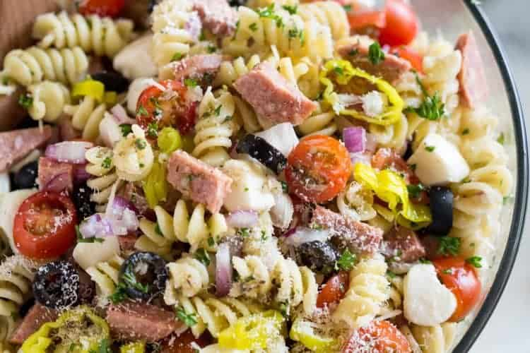

Pasta Salad

Amazing pasta with tomatoes,pepperoni, and provolone. This is great as a easy meal to make, and good for side dishes.
Ingredients
- 16 oz fusilli pasta
- 3 cups tomatoes
- 1/2 lb salami
- 1/4 lb pepperoni
- 1 green bell pepper
- 1 can of black olives
- 1 (4 oz) jar pimentos
- 1 bottle italian salad dressing
Steps
- Get a large pot of water boiling, put the fusilli into it, stirring occasionally, cook for around 12 minutes and then drain
- In a bowl mix the fusilli, tomatoes, cheese, salami, pepperoni, green pepper, olives, and pimentos. Add salad dressing and mix